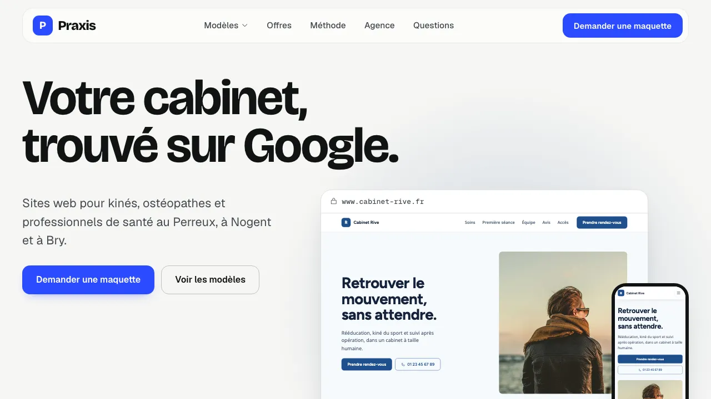
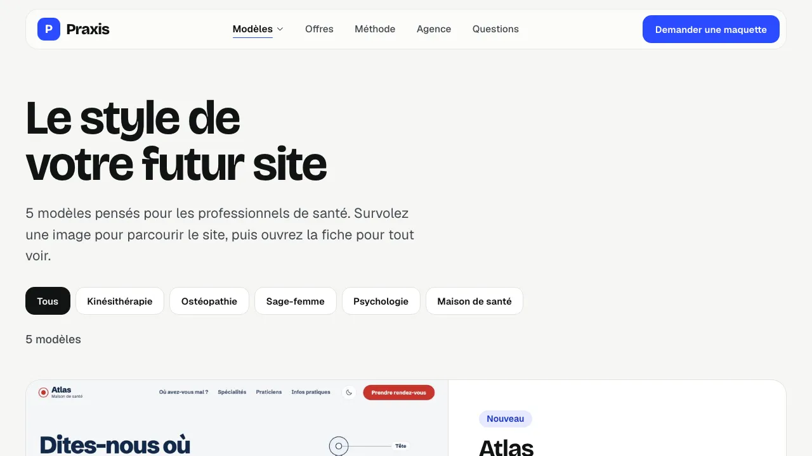
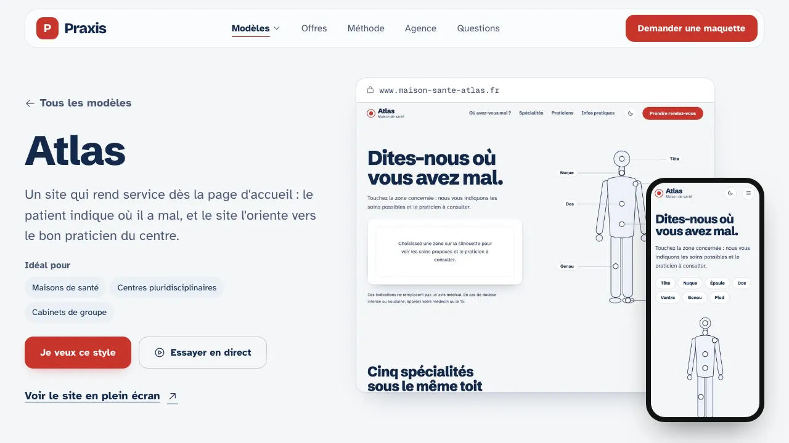
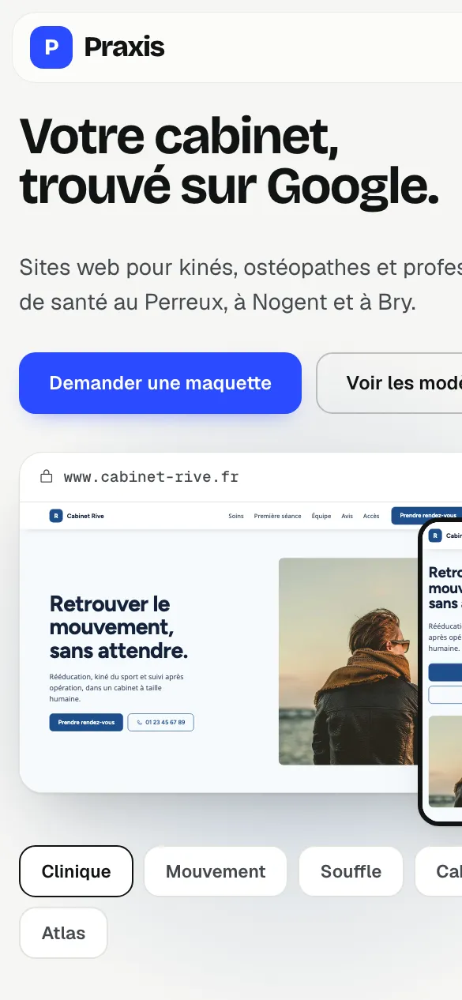
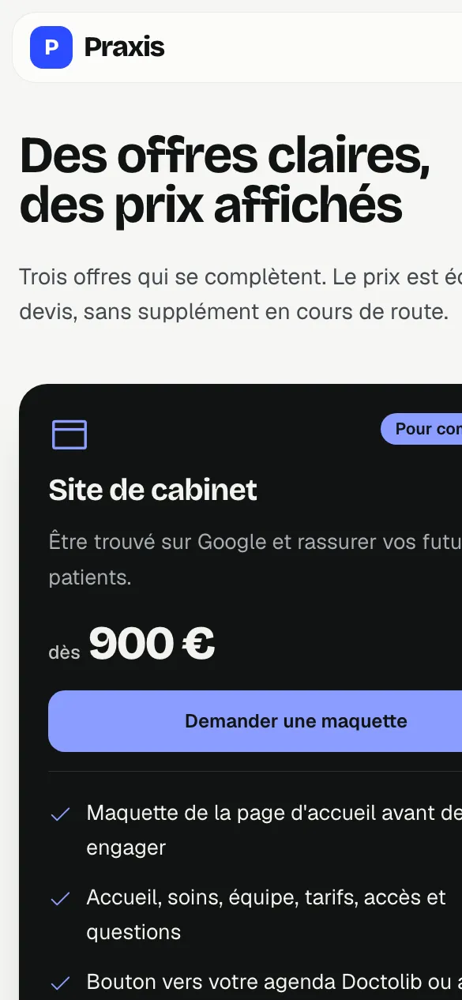
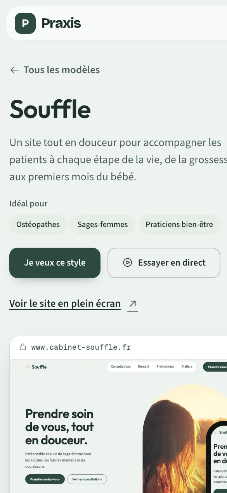

Praxis — sites pour professionnels de santé
Site pour une agence qui crée des sites de cabinets : cinq modèles à explorer (kinésithérapie, ostéopathie, psychologie, maison de santé), des offres à prix affichés dès 350 € et une méthode en six étapes.
Présentation
Conception d’un site d’agence pour les kinés, ostéopathes, sages-femmes et psychologues : une identité sobre en bleu électrique, cinq modèles de sites complets à parcourir sur ordinateur et téléphone, une galerie avec une fiche par modèle, des offres à prix affichés et une méthode expliquée étape par étape. Les cabinets, photos et coordonnées des modèles sont fictifs.
Objectifs
- Rassurer un praticien peu à l’aise avec le numérique, sans jargon
- Montrer le résultat concret grâce à cinq modèles complets, du kiné au psychologue
- Afficher des prix lisibles dès le départ et une méthode claire jusqu’à la mise en ligne
Points forts
- Un modèle par univers, avec aperçu qui défile sur ordinateur et téléphone
- Galerie, fiche détaillée par modèle et bouton « Je veux ce style » qui préremplit le contact
- Menu discret et accessible, contrastes vérifiés, mode sombre pris en charge
Captures — ordinateur



Captures — smartphone (responsive)



Ce que ce projet montre
Un praticien veut voir à quoi ressemblera son site avant de s’engager. Ce projet répond à cette attente : des modèles complets par spécialité, des prix affichés et une méthode qui explique chaque étape. Le modèle choisi devient ensuite le site du cabinet, avec ses couleurs, ses photos et ses textes.
Pour votre activité
Pour un projet de ce type (professionnel de santé, TPE ou site vitrine par métier), notre site 6 pages (1 490 €) ou l’abonnement (0 € à la commande puis 59 €/mois) sont les plus adaptés, avec une maquette gratuite avant de payer. Le sur-mesure se chiffre sur devis. Consultez nos tarifs et nos services, demandez un audit gratuit de votre site actuel, ou retrouvez aussi nos autres projets.